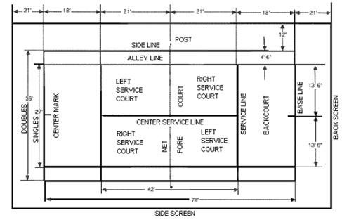

Hard courts are made of asphalt or concrete, usually covered with an acrylic coating. The coating protects the
court from the elements, enhances its appearance, and affects the playing characteristics of the court. Generally,
a hard court yields what is known as a 'fast' game, meaning that a tennis ball bounces off the court surface at a
low angle. The speed and angle of the tennis ball coming off a bounce are determined by the power and spin of
the hit and are relatively unaffected by the surface of the court. This speed, however, can be adjusted depending
on the amount, type and size of sand used in the color coating. "Slow" playing, textured surfaces are available.
Properly installed, hard courts are generally considered to be durable and to require relatively low maintenance.
When a resilient layer (or layers) of cushioning material is applied over an asphalt or concrete court, a cushioned
court results. Cushioned courts usually have excellent playing characteristics and an all-weather surface for year
round play. These attributes make them popular with players but such courts are considerably more expensive
than hard courts.
Tennis Court Specifications
Playing Lines:
The outside dimensions of the playing lines should be as follows:
Doubles 36' x 78' (10.97m x 23.77m)
Singles 27' x 78' (8.23m x 23.77m)
All lines should be not less than 1" (2.54 cm) nor more than 2" (5 cm) in width, except the base line which may
be up to 4" (10 cm) in width and the center line which should be 2" (5 cm) in width.
Clearance Between Courts
Where courts are constructed within the confines of a common enclosure, the distance between side lines should be
not less than 12' (3.658m). Where space permits, it is desirable to provide additional space between side lines to
enhance play; 24' (7.315m) is recommended.
Tennis Court Orientation:
A tennis court should be laid out to minimize players looking into the sun when serving or when following the flight
of a ball. A tennis court also should be laid out to avoid distracting shadow lines and patterns on the court surface.
Theoretically, the best possible layout would be to orient the longitudinal axis of the court perpendicular to the
azimuth of the sun -- the angular measurement of the horizontal location of the sun in relation to true north.
Since the azimuth of the sun constantly shifts according to the time of day, the season of the year and the latitude
in which it is observed, it is difficult to generalize about an ideal orientation.
NOTE: It is important to remember that the orientation of the court should be in relation to true north, not to
magnetic north. The angular difference between true north and magnetic north is referred to as the "deviation
of magnetic north." This deviation changes according to the geographic location. Information relating to the
deviation of magnetic north from true north can be easily obtained from a local surveyor or airport facility.
Contact us for free advice and design services to ensure you are aware of all the cost savings available when
designing and constructing a new tennis court.
Layout: (Standard Size Tennis Court: 60' x 120')


Tennis court construction basics
If you are considering a new tennis court, here are some basic requirements to consider.
SIZE AND SPACE: A standard size tennis court for doubles play measures 60' x 120' from fence to fence. For batteries
of two or more courts, a minimum of 48' additional width is allowed for each extra court. For example, two courts
measure 108' x 120', three courts measure 156' x 120', etc.
Total cleared space, however varies depending upon site topography, perimeter drainage needs, landscaping and so on.
You'll need a minimum of 5' around the entire court perimeter. A steeply sloped site requires more clearing to allow for
natural sloping around the court. Additional space provisions are needed for special drains, elaborate landscaping or
patios. Courts can be smaller than these dimensions, but since the playing lines for doubles are always 36' x 78',
undersizing compromises safety and quality of play.
ORIENTATION: If possible, a tennis court is situated in a true north-south direction.
PERIMETER SLOPING & DRAINAGE: A court built into the side of a hill requires different perimeter sloping and
drainage than one built on a flat, open area. To divert surface water from washing onto or under a court, a variety
of techniques are used, ranging from natural swales, to elaborate underground systems. Sometimes retaining walls
are required with drainage provisions behind the walls. This all affects size and space requirements.
FENCING: Lots of options here. A standard fence is 10' high, but 8' or 12' may be appropriate at times. The court can
be fully enclosed with a high fence or sides can be left open or enclosed with a lower 3' or 4' fence. Corners can be a
traditional 90 degrees or cut off diagonally. Support systems include wood (round cedar or pressure treated pine) or
steel posts (galvanized or vinyl-bonded). The fabric can be vinyl-bonded chain link, netting or chicken wire.
PERMITS: Local bylaws and rules regarding tennis court construction vary. The following issues must be addressed.
1. Building Permits and Fees - Check with your local building department.
2. Conservation Restrictions - Check with your local conservation department.
3. Utilities - Prior to groundbreaking, a common agency is notified to spot and mark all
underground lines for gas, electricity, water and sewer.
A well-drained area should be chosen, after which all trees and growth, including root systems should be removed.
Remove the topsoil and other unsuitable soils down to the clay or hardpan base. When grading the area, allow at
least three feet beyond the fence lines and grade in one plane with a slope of one inch in twenty-four feet, the slope
to be in the direction of the most advantageous drainage.